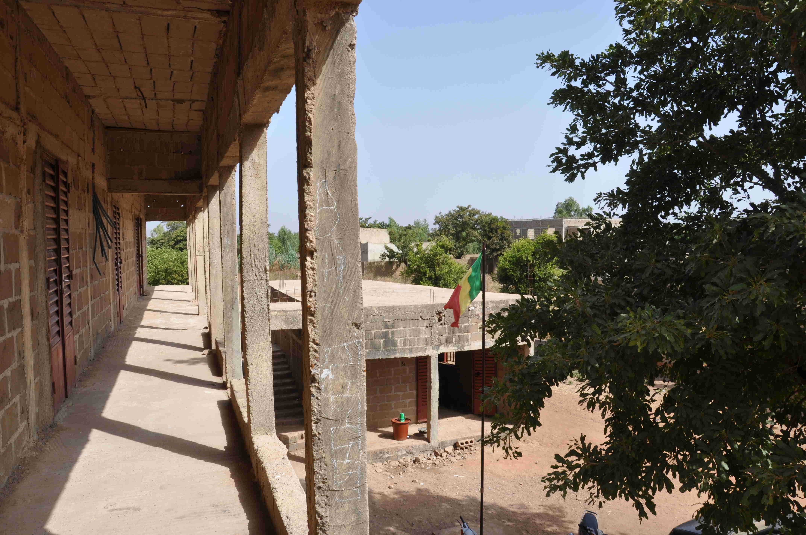

Építs egy Iskolát
Malinak súlyos problémája van az iskolák infrastruktúrájával. Az ország több területén a gyerekeknek nincs lehetőségük az iskolába járni, vagy amiatt, hogy a legközelebbi iskola túl messze van (5-15 km), vagy amiatt, hogy a lehetséges állami iskola annyira túlzsúfolt, hogy több gyerek nem bírja követni a tantervet. Egy átlagos osztály létszáma egy Bamakói állami iskolában 170-200 gyerek.
Miközben Maliban az állam súlyos kudarcot vallott abban, hogy alapszintű oktatást biztosítson a folyamatosan növekvő népességnek, a privát részleg próbálja teljesíteni az állam feladatait. Az ország több területén a szülőknek nincs más választásuk, mint hogy a gyerekeiket egy szerényebb magán iskolába járassák. Ezek az iskolák azonban messze állnak attól, amit elvárnánk egy magán iskolától. Ezeket az iskolákat általában nagy erőfeszítéssel magánszemélyek alapítják, mint például egy tanár, vagy egy modern gondolkodású vezetője egy hitközösségnek.
A finanszírozás általában csak a lépésről-lépésre módszert engedi meg, így az építkezés kisebb-nagyobb megszakításokkal együtt évtizedekig eltarthat.
Alapítványunk ilyen iskolákkal dolgozik együtt, elősegítve a technikai fejlődést valamint a tanterv modernizálását. Támogatunk például: új tanterem épitését, számítógép-terem létrehozását, mosdóhelyiség építését, oktatáshoz szükséges eszközök, írószerek és sportszerek beszerzését. Ezt a fajta támogatást nevezzük "hardver" programnak.
Úgy gondoljuk azonban, hogy fontos az, hogy a “hardver” programok kiegészűljenek “szoftverekkel”, amik a tanításon, a tanárképzésen és az oktatási kampányokon keresztül abban segítenek, hogy a legtöbbet hozzák ki az adományokból.
Programjaink követhetőek és dokumentálhatóak, és a helyi szükségletek alapján tervezzük meg őket.
Jelenlegi Programaink
A Győztesek Iskolája, Bamakó:
Segítünk az iskolának befejezni a tantermek vakolását és egy korlátot építeni az emeleti folyosó mentén, hogy mindenki biztonságosan közlekedhessen.

Építünk WC-ket és kézmosó állomást is az iskolának. Ennek az iskolának egyáltalán nem voltak WC létesítményei több évig. A lyukakat már kiásták e célra, de a burkolat még mindig hiányzik. Jelenleg 4 WC és egy kézmosó állomás építése van folyamatban.

Amint a WC-k és a kézmosó állomás készen van, egy Kézmosási Kampányt tervezünk, hogy megtanítsuk a gyerekeknek a higiénia alapelveit, és bevezessük a kézmosás szokását. Részletek a Kézmosási Kampány cím alatt.